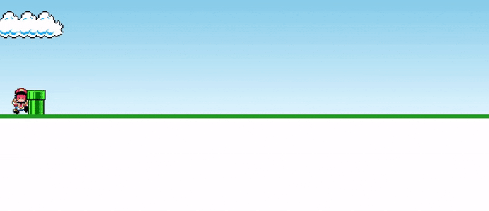

🎮
Adicione um screenshot do jogo aqui
HTML · CSS · JS
01
Projeto de estudo · Pendente de Evolução
Mario Cart Game
Mini-jogo web inspirado no clássico Mario, desenvolvido com o objetivo de praticar conceitos fundamentais de front-end. O projeto apresenta um personagem animado que deve saltar para desviar de obstáculos, como canos, utilizando detecção de colisão, animações em CSS e lógica de game over. Ainda pretendo adicionar novas funcionalidades e melhorias ao jogo.
HTML5
CSS3 Animations
JavaScript
Game Logic
Animações de pulo com keyframes CSS
Detecção de colisão em tempo real
Obstáculos com velocidade dinâmica
Tela de Game Over com sprite